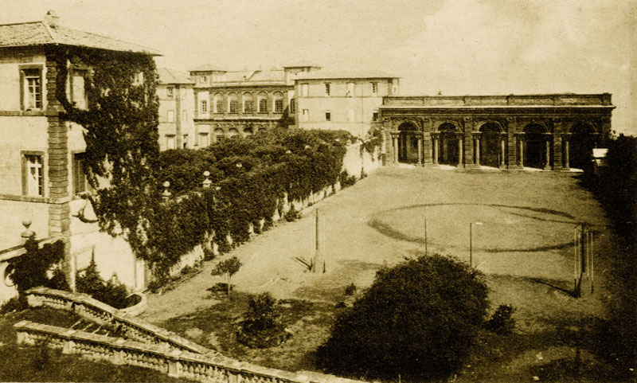

10-th Cologne-Twente Workshop
on graphs and combinatorial optimization
Villa Mondragone, Frascati, June 14-16, 2011
on graphs and combinatorial optimization
Villa Mondragone, Frascati, June 14-16, 2011
Acknowledgments
The organizing committee wishes to thank all participants for the successful outcome of the workshop. Special thanks go to the speakers of the memorial session and to the program committee members for their valuable contributions.
Special Issue
- A special issue of Discrete Applied Mathematics, containing full length papers, refereed according to the high standards of DAM, is planned. Go to the special issue page for more details.
About CTW
The Cologne-Twente Workshop on Graphs and Combinatorial Optimization welcomes contributions on theory and applications of discrete algorithms, graphs and combinatorial structures in the wide sense. The tenth edition of the workshop will be hosted by Università di Roma “Tor Vergata”, in Villa Mondragone, an historical villa located in Frascati (Rome), Italy, from June 14 to 16, 2011.
Following a well established tradition, the workhop aims to disseminate scientific results, especially by young researchers, in a friendly and interactive atmosphere.Program
- The program of the workshop is available on the program web page.
Memorial session
CTW will honor the memory of Prof. Bruno Simeone (Università degli Studi di Roma "La Sapienza") who recently passed away. Bruno gave fundamental contributions in the field of combinatorial optimization and graph theory in the last 40 years. His friends and colleagues
- Ronald Becker;
- Endre Boros;
- Yves Crama
- Martin C. Golumbic;
- Pierre Hansen;
- Paolo Serafini
